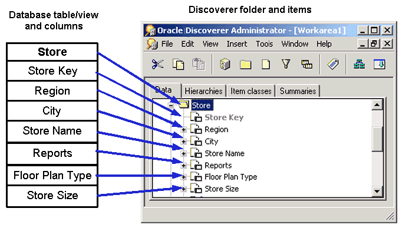
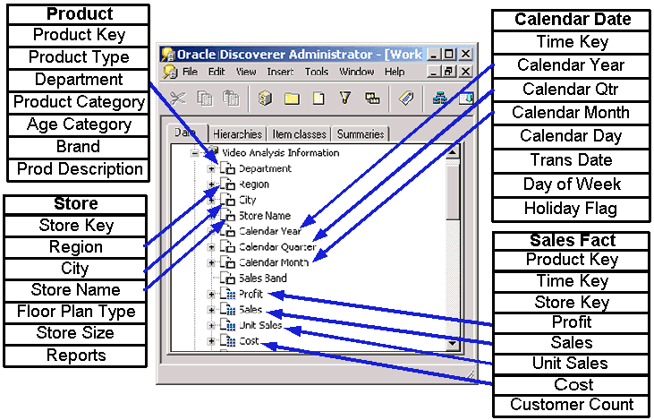
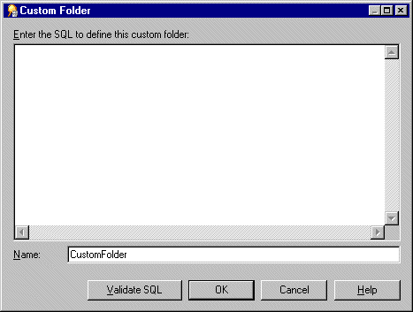
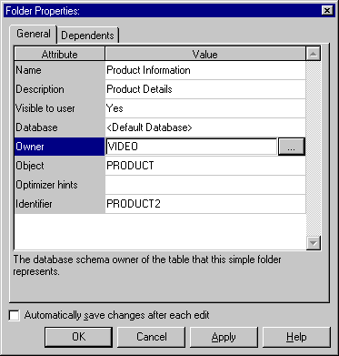

10g (9.0.4)
Part Number B10270-01
Library |
Contents |
Index |
| Oracle Discoverer Administrator Administration Guide (Online Help) 10g (9.0.4) Part Number B10270-01 |
|
This chapter explains how you create and maintain folders using Discoverer Administrator, and contains the following topics:
A Discoverer folder is a representation of result set data. The visual concept of a folder in Discoverer is analogous to a directory in Windows where folders are the containers and items are the files held in the folders. A Discoverer folder represents a group of related items. Discoverer end users select items from one or more folders to get information from the database. As the Discoverer manager, it is your responsibility to create suitable folders to enable Discoverer end users to access the information they need.
There are three types of folder:
To the Discoverer end user, the type of a particular folder is immaterial. Whether a folder is simple, custom, or complex is only important to the Discoverer manager. Even in Discoverer Administrator, there is very little difference in the behavior of these different types of folders. Folders can include items, calculated items, joins, conditions, item classes, and hierarchies. Items in a folder can be used in summary folders and to define hierarchies.
Discoverer end users work with folders within the context of business areas.
As the Discoverer Manager, you can assign a folder to one or more business areas. Note that a folder has a single definition, regardless of the number of business areas to which you assign it.
You can remove a folder from all business areas without deleting it from the EUL. Folders that exist in the EUL but which are not currently assigned to a business area are referred to as orphan folders.
Simple folders contain items based on columns in a single database table or view. Items in a simple folder can also represent calculations on other items in the folder.
You create a simple folder by loading a table definition or table metadata from the database or a gateway.

Complex folders contain items from one or more other folders. Complex folders enable you to create a combined view of data from multiple folders. This is analogous to a view in the database.
Using a complex folder enables you to simplify the business area without creating a new database view. For example, you can create a complex folder called Dept-Emp which has columns from both the DEPT and EMP tables. The user can select from one folder instead of two.
For two items from different folders to belong to the same complex folder, a join condition must exist between the two folders. For more information about joins, see Chapter 9, "What are joins?".

You could produce the same result set using a database view instead of a complex folder. However, using a complex folder instead of a database view offers several advantages. You can:
Custom folders are folders based on a SQL statement which could include SET operators (e.g. UNION, CONNECT BY, MINUS, INTERSECT) or a synonym that you type directly into a dialog.
By defining a custom folder, you can quickly create a folder that represents a complicated result set. When you save the custom folder, Discoverer Administrator creates items using the 'Select' part of the SQL statement you have entered.
In Discoverer Plus, there is no distinction between a custom folder and a simple folder. A Discoverer end user can use a custom folder to build queries in the same way as any other type of folder.
Custom folders are very similar to simple folders, with the following exceptions:
This section consists of the following examples:
SELECT BRAND FROM PROD
In this example, PROD is a synonym that points to the product table.
The underlying table or view that the synonym points to, can be switched without the need to change the custom folder definition in Discoverer (i.e. providing that the column names of the table/view that the synonym refers to, do not change).
SELECT BRAND FROM PRODUCT@DATABASELINK
In this example, PRODUCT is a table in another database, and DATABASELINK is the database link to the other database.
SELECT 'COMPANY1' COMPANY, ENAME, SAL FROM EMP@HQ
UNION
SELECT 'COMPANY2', COMPANY, ENAME, SAL FROM EMP@REGIONA
In this example, HQ and REGIONA are database links for remote databases. The result set is the union of all employees with a column named COMPANY1 to show which company they are from.
SELECT ENAME, SAL FROM EMP
WHERE SAL > (SELECT AVG (SAL) FROM EMP)
In this example, the (SELECT AVG (SAL) FROM EMP) subquery is included in the folder definition.
SELECT /*+ FULL(scott_emp) PARALLEL (scott_emp, 5) */
ename
FROM scott.emp scott_emp;
In this example, the PARALLEL hint overrides the degree of parallelism specified in the emp definition.
SELECT EMPNO, ENAME, JOB FROM EMP
CONNECT BY PRIOR EMPNO=MGR
START WITH KING
In this example, the CONNECT BY clause defines a hierarchical relationship in which the EMPNO value of the parent row is equal to the MGR value of the child row (i.e. it filters each row where the PRIOR condition is true).
SELECT ENAME, SAL*12+NVL(COMM,0) ANNUAL_SALARY
FROM EMP
In this example, the alias ANNUAL_SALARY is required on the SAL*12+NVL(COMM,0) expression.
Although a custom folder can contain any valid SQL statement, any column expressions must be aliased in the same way that a SQL view definition would be aliased. In these cases, the alias will be used as the item name.
No alias is required on simple column expressions like ENAME.
You can use a custom folder to create a list of values for an item in a folder where you know that the list values in the database will not change. This is more efficient than running a query using a list of values defined against an item in a folder that has a much larger number of rows than the number of distinct values.
If you have a smaller number of static values you can use a custom folder to create a local list of values within the End User Layer.
For example, if you want a list of values for North, South, East and West, create a custom folder called Region_lov and enter the following SQL:
SELECT 'NORTH' REGION FROM sys.dual
UNION
SELECT 'SOUTH' REGION FROM sys.dual
UNION
SELECT 'EAST' REGION FROM sys.dual
UNION
SELECT 'WEST' REGION FROM sys.dual
The above SQL creates one item called Region that you can use as a list of values to significantly improve performance.
For more information about lists of values, see Chapter 8, "What are lists of values?".
If you copy an item from a simple folder and paste the item into the same simple folder, the new item is completely separate from the original item and has a new name generated (e.g. region1). Changes in either item are never reflected in the other item.
If you copy an item from a simple folder and paste the item into a complex folder, the new item in the complex folder is still related to the original item. You can rename the new item and change its properties without the changes affecting the original item. However, the new item is dependent on the original item because the formula of the new item references the name of the original item. If you modify the formula of the original item, the data returned by the new item will also change. Similarly, if you delete the original item, the new item is also deleted because its formula property references the original item.
For example, if you copy the item 'Region' from the Store table and paste it into the complex folder 'Video Analysis Information' and then edit the properties of the copied item 'Region' in the complex folder 'Video Analysis Information'. You will notice that the Formula property of the Region item is itself a calculated item that uses the calculation Store.Region. The calculation Store.Region indicates that the item is dependant on the item Region in the folder Store. The conditions that were described in the previous paragraph will apply to the Region item that you copied into the complex folder 'Video Analysis Information'.
You can view a list of the dependencies for an item on the Dependencies tab of the Item Properties dialog.
A folder represents a set of data that can be returned from the database. If you apply a mandatory condition to a folder (e.g. where Year=2000), the set of data that can be returned will change. A complex folder built using this folder will reflect the restricted set of data of the source folder. If you later remove the mandatory condition from the source folder, the change is reflected in the complex folder.
Data that is important to one department is often useful to another. Discoverer Administrator therefore enables you to share a folder that you have created in one business area with other business areas. For example, you might want to share a Sales Facts folder that includes columns for Income and Costs in the business areas you create for both the Marketing Department and the Accounting Department.
If you make changes to a folder in one business area, the changes are made to the folder in every business area that uses the folder.
To create simple folders from the database in an existing business area:
To create a complex folder:
Hint: You might find it easier to drag items between folders if you have two Workareas open. To open a second Workarea, choose Window | New Window.
When you add an additional item to a complex folder, the folders that it comes from must be joined to the folder of at least one other item already in the complex folder. If this is not the case, Discoverer Administrator will display an error dialog.
If you select items from two folders that are joined using more than one join, Discoverer displays the Choose Join dialog. For more information, see "About joining two folders using more than one join".

Discoverer creates a complex folder.
To create a custom folder:

You can include comments as separate lines within the SQL statement by starting the comment line with two dash characters (i.e. - -).
To edit the properties of a folder:
You can select more than one folder by pressing the Ctrl key and clicking another folder.

If you selected multiple folders, the Folder Properties dialog displays a value for each property that has the same value for all of the selected folders. If the value for a particular property is not the same for all of the selected folders, no value is displayed for that property.
Hint: To save the changes you make as you make them, select the Automatically save changes after each edit check box. With this option selected, you do not have to click OK or Apply.
To base a simple folder on a table/view without specifying the database user name, clear the Owner field. When the Owner field is left blank, Discoverer Administrator generates SQL that does not include the owner before the table name.
For example, if the Owner field contains the name of the schema that owns the table/view, the generated SQL statement might be:
select <column> from <owner>.<table>
If you clear the Owner field, the generated SQL statement would be:
select <column> from <table>
If the object is not in the current schema, a warning is displayed.
To edit a a custom folder's SQL statement:
Hint: You can resize the Custom Folder dialog to view more of the SQL statement.
To delete a folder from a business area:
You can select more than one folder by pressing the Ctrl key and clicking another folder.
The Confirm Folder Delete dialog enables you to choose how you want to delete the folder and to assess the impact of deleting the folder.
Removes the selected folder from the current business area. Note that this option does not delete the folder from the EUL. If the folder is not shared by any other business area, it becomes an orphan folder.
Removes the selected folder from all business areas that contain that folder. Note that this option also completely removes the folder definition from the EUL.

The Impact dialog enables you to review the other EUL objects that might be affected when you delete a folder.
Note: The Impact dialog does not show the impact on workbooks saved to the file system (i.e. in .dis files).
The selected folder is deleted in the way that you specified.
To assign folders to a specific business area:
You use the Business Area -> Folder tab to assign any number of folders (including orphan folders) to a specific business area.
By default, the Business area drop down list displays the business area currently selected in the Workarea.
You can select more than one folder by pressing the Ctrl key and clicking another folder.
The business area now contains the folders you specified in the Current folders list.
To assign a folder to multiple business areas:
Use the Folder -> Business Area tab to assign a specific folder (including an orphan folder) to multiple business areas.
You can select more than one business area by pressing the Ctrl key and clicking another business area.
The folder is now assigned to the business areas you specified in the Current business areas list.
To view orphaned folders in the EUL:
Discoverer displays all the Orphaned Folders in the current EUL.
To remove an orphaned folder from the EUL:
Use the Orphaned Folders tab to delete an orphan folder from the EUL.
You can select more than one orphaned folder by pressing the Ctrl key and clicking another orphaned folder.
The folder is now deleted from the current EUL.
You can alphabetically sort folders in a selected business area.
To alphabetically sort folders in a business area:
Note: Discoverer Administrator displays the "Alphabetical Sort dialog" indicating the number of folders that will be alphabetically sorted and stating that the existing order will be lost.
Folders can also be sorted during bulk load when you load a business area. For information about sorting folders when using the:
You can alphabetically sort items and conditions in a selected folder.
To alphabetically sort items in a folder:
Note: Discoverer Administrator displays the "Alphabetical Sort dialog" indicating the number of items that will be alphabetically sorted and stating that the existing order will be lost.
Items can also be sorted during bulk load when you load a business area. For information about sorting items when using the:
The order in which you see folders displayed in Discoverer Administrator is the same order that Discoverer end users will see. By default, folders within a business area are displayed in alphabetical order. However, you might want to change the default order to:
To change the order of folders in a business area:
Occasionally, you might encounter difficulties with Discoverer Administrator folders. For example, you might be able to see folders in Discoverer Administrator that Discoverer end users cannot access. Use the Validate Folders facility to help you diagnose the problem.
To validate the link between the folders in a business area and the database objects they refer to:
|
|
 Copyright © 2003 Oracle Corporation. All Rights Reserved. |
|